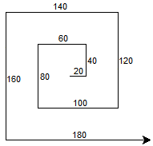
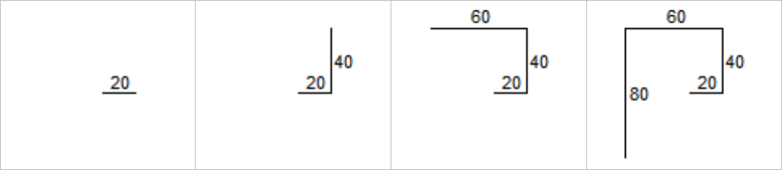

Le langage de programmation Python a commencé à être
développé en 1989, par le
néerlandais
Guido Von Rossum.
Ce langage est multi-plate-formes, c'est-à-dire disponible sur plusieurs systèmes
d'exploitation (Windows, Linux, Mac, ...).
Il existe plusieurs versions du langage Python.
C'est la version 3 qui sera utilisée dans les exercices de ce site.
Utiliser ce site
Ce site web est un recueil de cours et d'exercices corrigés permettant de
s'entraîner à maîtriser le langage Python.
Pour chacun des thèmes étudiés cette année, il faudra respecter le calendrier et
travailler pour la semaine suivante la leçon ainsi que les exercices de niveau
«Débuter» et «Progresser» signalés dans le calendrier.
Les exercices de niveau «Maîtriser» et «Aller plus loin»
seront très utiles pour vous donner des pistes de réflexion lors de la conception des
projets de fin d'année.
Important
On navigue dans ce site en passant la souris au dessus de l'icône représentée
ci-contre ou bien de page en page à l'aide des boutons en forme de flèches situés
en bas à droite de l'écran.
Prendre de bonnes habitudes pour bien programmer
Programmer ne s'improvise pas et nécessite de la rigueur. Il est souvent
nécessaire d'utiliser un papier et un crayon avant d'utiliser
un clavier et une souris. Le papier/crayon va permettre d'élaborer un
algorithme, qui est la démarche à mettre en oeuvre pour
résoudre le problème posé. La programmation vient ensuite ;
elle correspond à la traduction de l'algorithme dans un langage compréhensible
et interprétable par l'ordinateur (en Python dans
le cas présent).
Voici une liste d'actions qui, réalisées dans l'ordre, devrait permettre
d'organiser au mieux votre réflexion :
- Commencez par schématiser ( avec un croquis, un tableau, un arbre,
etc... ) le problème proposé.
- Repérez, dans ce schéma :
- les éléments constants ;
- les éléments qui sont modifiés ;
- la «logique» de modification de ces éléments (souvent
un calcul arithmétique...) ;
- les répétitions, tests de vérification et conditions induites
- les éléments que doit entrer l'utilisateur et ceux qui seront
retournés à la fin de l'exécution du programme.
- Donnez un nom explicite aux divers éléments ainsi repérés (les constantes,
les variables, les fonctions).
- Traduisez l'algorithme en Python et utilisez les
(éventuels) messages d'erreurs pour corriger le programme.
Un exemple de résolution de problème
Ci-dessous se trouve une interface permettant de programmer en
Python et de visualiser l'effet du programme.
Cette interface très pratique à pour inconvénient de ne pas signaler les
éventuelles erreurs. Si rien ne se passe, c'est donc que le code contient
une erreur...
Par contre, il est aussi possible (et même recommandé) de faire un
copier/coller du code afin de le compléter dans un éditeur de programme
Python comme
Pyzo par exemple.
Énoncé du problème

Compléter le programme ci-dessous.
Ce programme doit permettre de réaliser le tracé ci-contre. Les longueurs en pixels
sont là pour aider à la conception du programme, il n'est pas nécessaire qu'elles
s'affichent à l'écran...
- Une piste ?
- Un schéma ?
- Une analyse ?
- Une solution ?
Il faut chercher un «pattern», c'est-à-dire un schéma répétitif
dans le motif. Pour cela, écrire sur une feuille ce qu'il se passe de nouveau
à chaque nouvelle étape.
Décomposition des premiers mouvements à effectuer par le crayon :

Le crayon doit...
- avancer de 20 pixels ;
- tourner à gauche de 90° ;
- avancer de 40 = 2 × 20 pixels ;
- tourner à gauche de 90° ;
- avancer de 60 = 3 × 20 pixels ;
- tourner à gauche de 90° ;
- avancer de 80 = 4 × 20 pixels ;
- tourner à gauche de 90° ;
- etc...
from turtle import *
t = Turtle()
##--- Ci-dessous, on complete le programme ---##
distance = 20 # Longueur "constante" ajoutée au déplacement
for i in range(9): # Valeurs prises de 0 à 8
t.forward(distance*(i+1)) # donc i+1 va de 1 à 9...
t.left(90)
##--- Fin du programme ---##
exitonclick()
Plan du cours